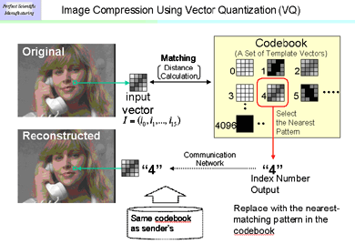
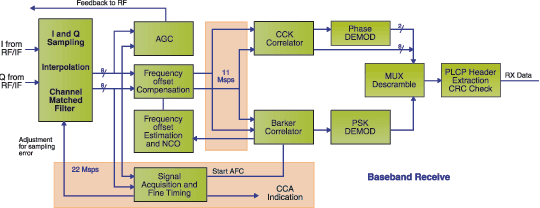

- systems -
 |
After all, this is computer science, not real science. . Operating Systems Project Information Current Operating Systems Projects and OS-related research This page contains pointers to all sorts of neat operating system projects scattered across the world-wide web. I've categorized all of the systems into all sorts of broad, inappropriate categories to make it easier to sort through. The full list is also of course available if you're a masochist. |
 |
. It is the only performance monitoring for Windows 2000 that is capable of scaling efficiently to meet the needs of some the world's most advanced Microsoft networks. Find out for yourself why systems professionals that are serious about Windows NT and 2000 turn to NTSMF for all their reporting needs. To get started with Performance Gallery, Performance SeNTry, and NTSMF today, click here. . |
|  |
" - David Bohm - Wholeness and the Implicate Order Whole System Glossary under construction. . Whole Systems This area is devoted to the study of whole systems. A whole system view would include all the factors involved and examine how they relate to each other and how they work as a whole. To deal with a whole system we can't leave anything out as irrelevant. |
INVESTOR INFORMATION Click here to get up-to-date investor information about our company. . April 22, 2002 Pumatech files patent infringement suit against Extended Systems, Inc. 0 software, featuring support for Pocket PC 2002 handhelds. April 1, 2002 Pumatech announces Enterprise IntellisyncTM, Second Edition software for Real-time Enterprise Synchronization.
|  |
A good systems site: http://www.e-systems.com